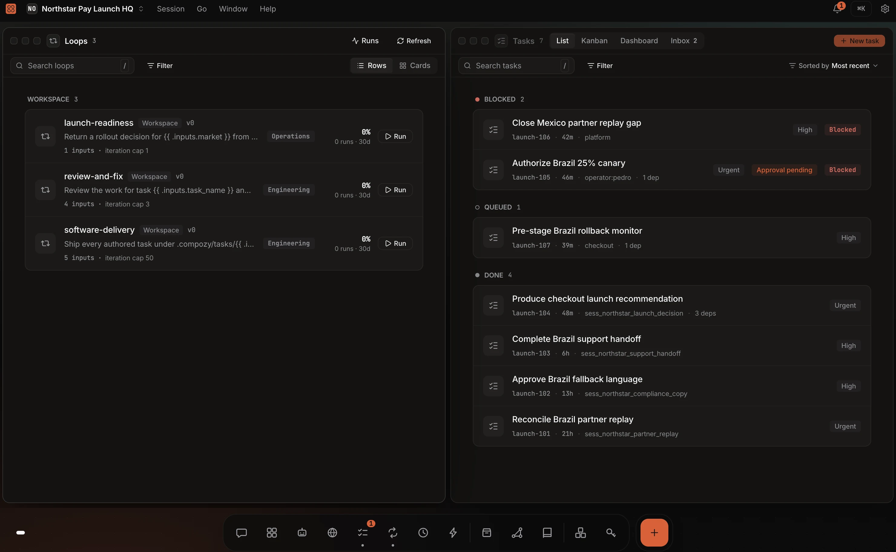
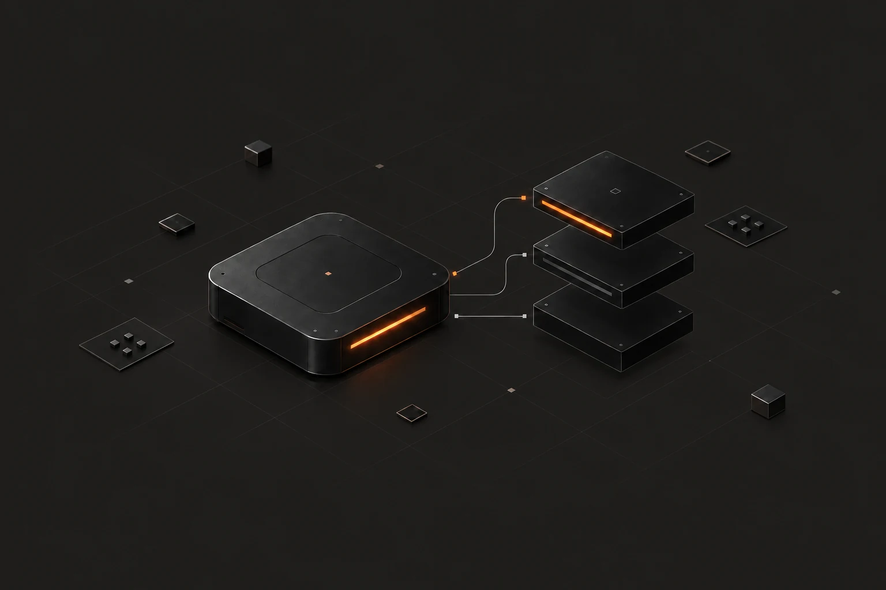
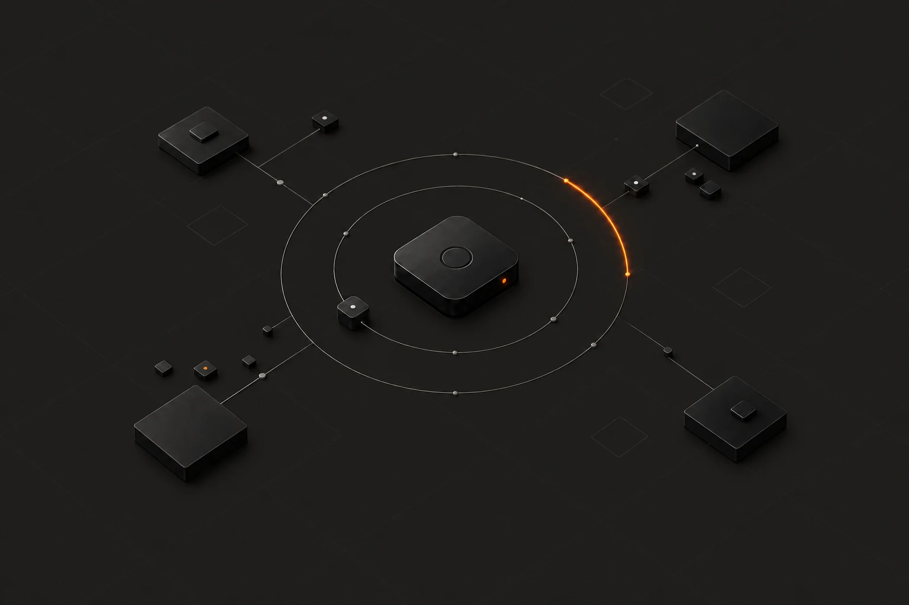
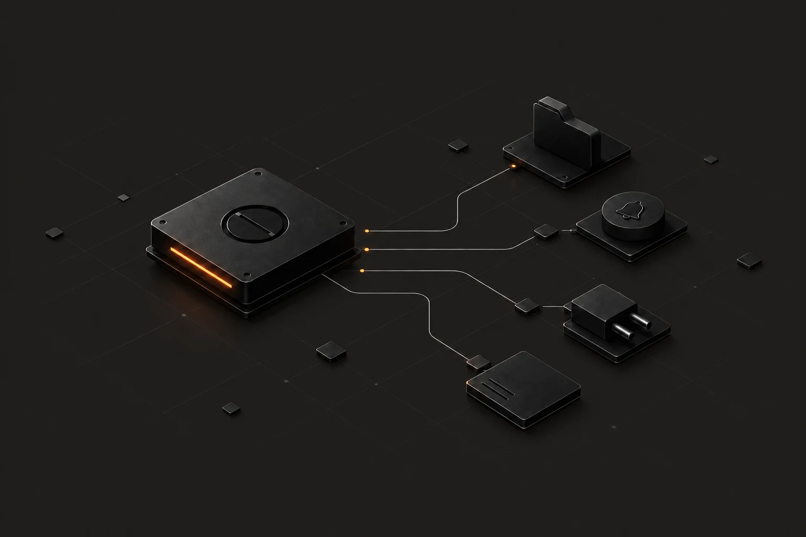
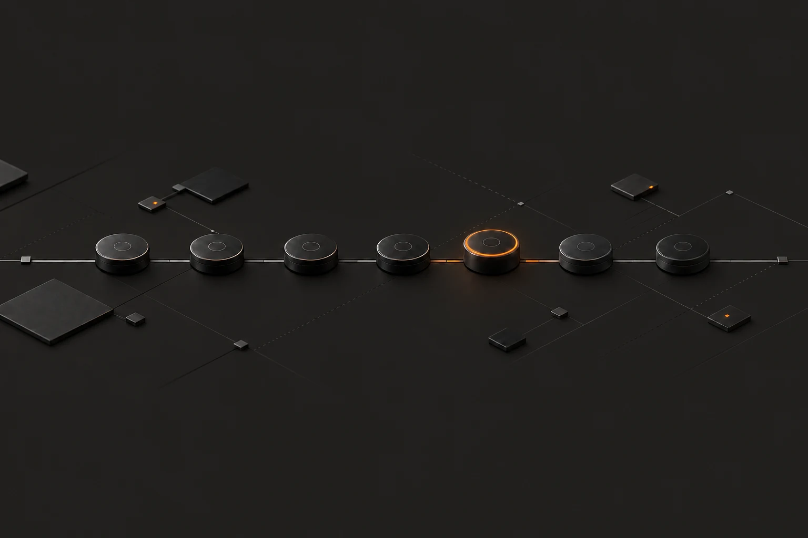
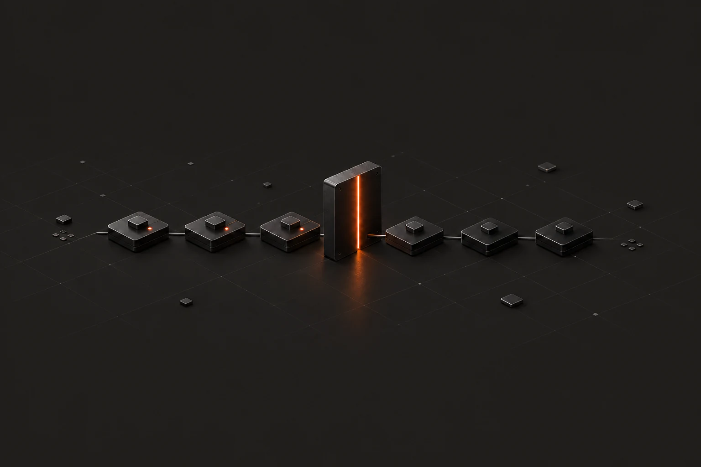
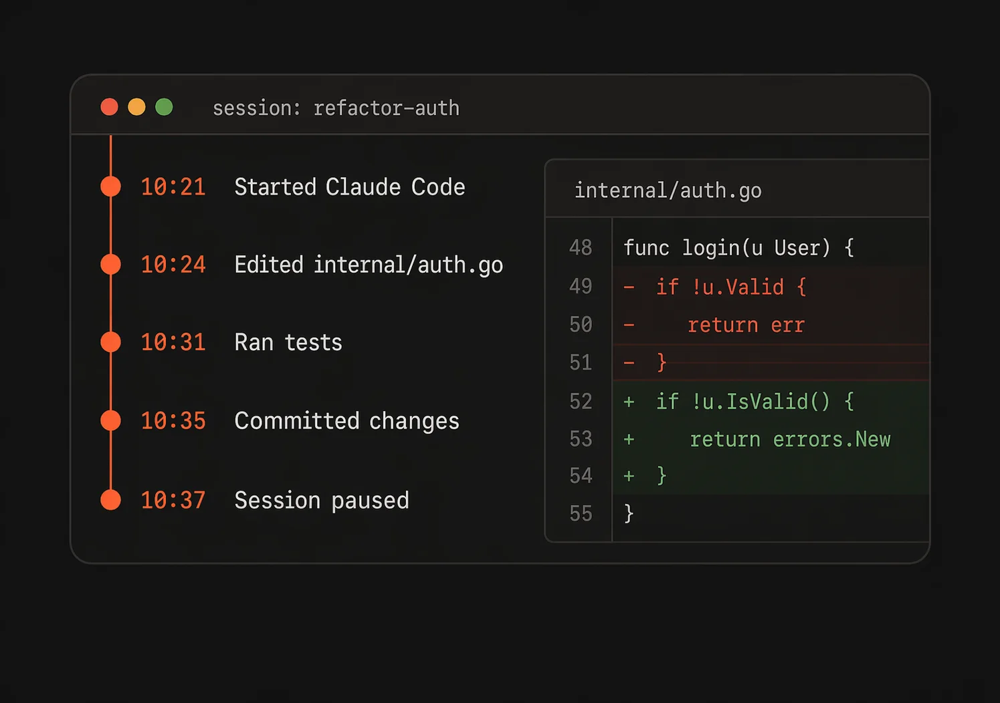
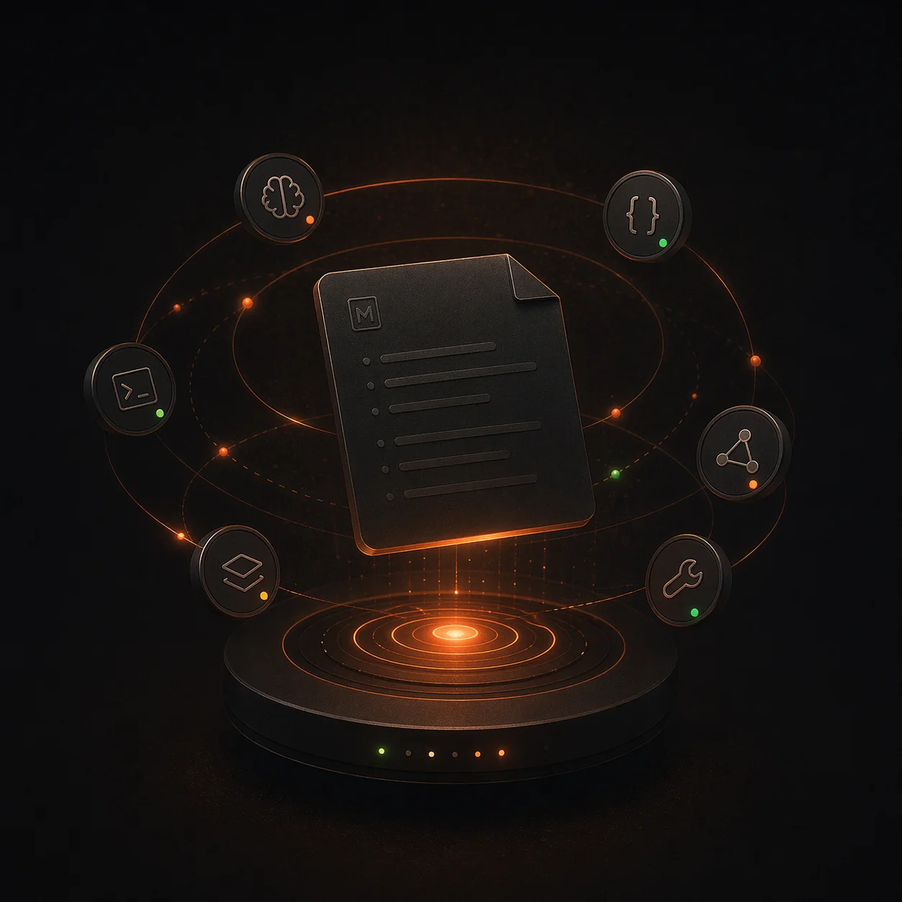
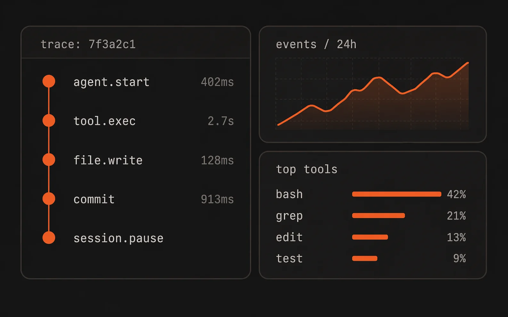

An operating system for AI agents
The system around the agent, already built.
One complete environment to create, automate, and supervise agent work, without scripts, plugin chains, or orchestration frameworks.

Start a session, watch the work stream, answer the permission ask.
/agents/$name/sessions/$id
Runs the agents you already use.
CompozyOS launches built-in CLI and provider integrations as durable sessions. Local is the default; choose Live when a session should discover peers, share capabilities, and coordinate through Compozy Network.
Provider subscriptions and API keys stay yours. CompozyOS resells no model access.
Anyone can prompt an agent. Keeping one working is still an engineering project.
Continuous agent work today means assembling loops, triggers, cron and webhooks, memory files, permission wrappers, approval gates, observability, and the glue scripts that hold them together. Every builder assembles that stack alone, and the process never repeats. CompozyOS replaces the pile, not one tool in it.
The models are broadly available. The repeatable process is not.
CompozyOS takes the jobs you keep doing by hand.
Five jobs, all running on shipped objects: Loops, tasks, jobs, approvals.
-

CompozyOS implements the task list after the tab closes
- The bundled
implement-tasksLoop works through authored tasks in dependency order. - The work lives in a durable session. Closing the terminal changes nothing.
- A crashed worker releases its lease; the queue hands the task to the next one.
Loopstaskssessions - The bundled
-

CompozyOS reviews a change and remediates until the round is clean
- The bundled
review-and-fixLoop pairs a reviewer with a fixer until a round returns no findings. - Findings land as Markdown files you can open, not chat scrollback.
- A human gate can park the run until someone approves.
Loopssessionshuman gate - The bundled
-

CompozyOS leaves a briefing waiting every weekday morning
- A scheduled job dispatches an agent at 08:30 with nobody watching.
- Every run is recorded, with retry and backoff on failure.
- The same job is manageable from web, CLI, and HTTP.
jobsautomation runssessions -

CompozyOS keeps release checks as claimed work
- Each concern is a task an agent can claim and heartbeat.
- Runs close complete or failed, with structured evidence.
- Task history shows who owned every check.
tasksclaim and leasesessions -

CompozyOS waits for a person before a sensitive action proceeds
- A tool call can require an approval before it runs.
- A Loop can pause in
needs-approvaluntil someone decides. - Waiting work surfaces on the menubar bell and the inbox.
approvalsgatesinbox
Developers have been running it for months.
Beta program, Dec 2025 to Feb 2026
“This tool is spectacular.”
“At work, employee of the week is going to be Compozy.”
“I left it running and went to a family barbecue.”
- GitHub stars
- MIT license
- releases
- Local-first, no telemetry
Built in Batteries included.
Comes with what you would otherwise build.
Memory, automation, permissions, approvals, and run history: core objects in one runtime, reachable from CLI, HTTP, and UDS.
Agent work that outlives the terminal
CompozyOS keeps the timeline, the edits, and the runs in a durable session. Pause one, resume it, and the record is still there.
Sessions open as windows in the OS shell. Every window managed.

Context that survives restarts
Typed Markdown memory (user, feedback, project, reference) with one index per scope. Agents read it on session start and update it through the same CLI.
When the gates pass, CompozyOS starts an ephemeral session that promotes recalled facts into durable memory. No surprise compute.

Work that stays claimed until it closes
Durable tasks a session claims, heartbeats, and closes: on a board, in an inbox, with history.
Every run has one owner; crashed work returns to the queue.
/tasks?mode=kanbanSchedules and webhooks, durable
CompozyOS owns clock jobs, runtime triggers, and signed webhooks. Every fire writes an inspectable run.
Run history comes from the records the runtime already writes. Nothing extra to instrument.

Every window managed
Persistent desktops, tiled groups, and floating windows. Layout is workspace state the daemon owns, not browser tabs.
⌘K runs the same commands the CLI exposes.
DesktopShell · dock · DesktopPagerSeparate work on one install
Each session, task, and automation files under a named profile. Switch, and the lists follow.
Profiles organize work; they are not a security boundary.
Local until you turn remote on
The daemon starts reachable only on this machine. Remote access is three switches, all off by default.
Private overlay, public delivery, public operator access: each is its own switch.
One project, registered once
Sessions, memory, tasks, and config attach to a workspace with a stable ID.
Worktrees give parallel agents their own checkout of the same repo.
Loops stop when the goal is verified.
A Loop is a named contract (goal, verification, and a stop) that the daemon runs unattended and always ends honestly.
A live run at /loop-runs, waiting on a human gate./loop-runs/$runId
- Typed contract, bounded iterationEvery Loop carries a goal, verification, and an iteration cap (default 50).
- Starts only where the definition allowsAn operator, a schedule, a webhook, or a runtime event.
- Approval is a live pause, not a toastThe run parks in
needs-approvaluntil someone decides. - The same run from web, CLI, and HTTPStatus, pause, cancel, history: one daemon state.
- Seven named endings
done,no-op,blocked,failed,exhausted,stalled,canceled. Never coerced.
Unattended work is recoverable: task runs are claimed with a token, held by a lease, and returned to the queue if a worker dies.
Read the Loops guideBuilt to be built on
One install. The daemon already has a place for it.
An extension is one package. CompozyOS publishes its skills, tools, agents, and Loops into the same registries people and agents already use.
spec-cycle ships in the box: the implement-tasks and review-and-fix Loops, the cy-* skills, and the agents that run them.
{
"extension": { "name": "spec-cycle", "version": "0.5.0" },
"capabilities": { "provides": ["tool.provider"] },
"resources": {
"skills": [{ "path": "skills" }],
"loops": [{ "path": "loops" }],
"agents": [{ "path": "agents" }],
"tools": { "import_tasks": { … }, "write_review_artifacts": { … } }
}
}
From the catalog
- Context7mcp
- GitHubmcp
- Linearmcp
- Notionmcp
- Sentrymcp
- Playwrightmcp
- Stripemcp
- PostHogmcp
- Postgresmcp
- Supabasemcp
- Repository Orientationextension
- Batutaextension
- Documentation Writerskill
Write one against the Host API, in Go or TypeScript, with React for views.
init → build → validate → dev → publish
Published installs run read-only against the Host API; claim tokens and leases stay with the daemon.
From anywhere. Into a session.
One platform message maps to one durable session; replies stream back to the original thread.
- Slack
- Discord
- Telegram
- Microsoft Teams
- Google Chat
- GitHub
- Linear
All eight providers ship in-tree. They are not embedded in the released binary: build and install the provider from a trusted source checkout before configuring a bridge instance.
Set up a bridgeEvery piece, side by side.
Synara, T3 Code, Hermes, and OpenClaw each prove demand for part of the system. CompozyOS ships those parts in one product, batteries included.
| Capability | CompozyOS | Synara | T3 Code | Hermes | OpenClaw | DIY stack |
|---|---|---|---|---|---|---|
| Runs the agents you already use | ||||||
| Loops, triggers, automation | Partial | |||||
| Work beyond coding | ||||||
| Approvals and audit | Partial | |||||
| One system, nothing to assemble |
workflowspolicieshistoryintegrationsswitching cost
Why it holds: one runtime, one state model. Loops, approvals, and memory are core objects, so replacing CompozyOS means rebuilding all of it.
Checked against each product's public documentation on <date>.
Install the beta. Start one durable session.
Use the verified installer on macOS or Linux, the npm beta channel, or the pinned Go release. Homebrew returns with the stable release. Today's experience is technical: a terminal, a local daemon, and one config file. Built for developers and technical operators.
Desktop for macOS and Linux. CLI for macOS, Linux, and Windows.
$ curl -fsSL https://compozy.com/install.sh | sh$ npm install -g @compozy/cli@beta$ go install github.com/compozy/compozy/cmd/compozy@v0.3.0-beta.21- 1
Bootstrap your CompozyOS home
npm and Go install the binary only. Create ~/.compozy/config.toml and the default general agent once.
$ compozy install - 1
Start the daemon
One local process, detached by default, exposing CLI, HTTP/SSE, and the web UI.
$ compozy daemon start - 2
Launch a real session
Run from the repository you want to manage. CompozyOS infers and registers the workspace from your current directory.
$ compozy session new --agent general --name first-run
Put agents to work continuously.
One complete environment, batteries included: loops, triggers, memory, permissions, approvals, and history. No scripts or orchestration frameworks to maintain.